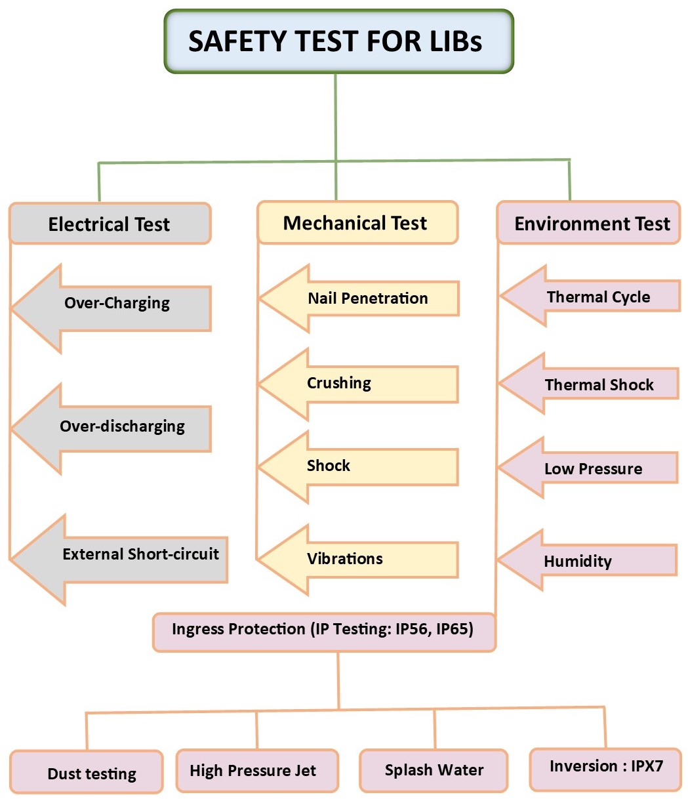

RESEARCH AREA
Battery Safety & Abuse Testing
Experimental investigation of lithium-ion battery safety under electrical, mechanical and environmental abuse conditions.
Explore Safety Research
Experimental investigation of lithium-ion battery safety under electrical, mechanical and environmental abuse conditions.
Explore Safety Research
Lithium-ion batteries can experience hazardous conditions when subjected to abnormal electrical operation, mechanical damage or severe environmental conditions. Such abuse conditions may result in excessive heat generation, degradation, internal damage, gas generation, fire and, under severe conditions, thermal runaway.
Systematic abuse testing is therefore essential for understanding battery failure mechanisms, evaluating safety margins and developing safer battery systems for electric vehicle applications.
Battery safety testing is classified into electrical, mechanical and environmental abuse conditions.

Experimental investigations are carried out using advanced battery safety and abuse testing facilities to characterize the response of lithium-ion cells and battery systems under controlled conditions.
The Adiabatic Rate Calorimeter (ARC) is used for investigating the thermal stability and heat-generation characteristics of lithium-ion batteries under controlled conditions.
The measurements provide valuable information about self-heating behaviour, exothermic reactions and thermal runaway characteristics.

Investigation of battery behaviour under abnormal electrical operating conditions.
Investigation of battery behaviour during charging beyond the specified operating voltage, including thermal and safety response.
Investigation of battery response when discharged beyond the recommended voltage limit and the associated electrical and thermal behaviour.
Investigation of localized electrical short-circuit conditions and their influence on heat generation and safety.
Evaluation of battery response to external short-circuit conditions, including current, temperature rise and safety behaviour.
Evaluation of battery response to mechanical damage and loading conditions.
Investigation of battery behaviour following mechanical penetration that can initiate internal short-circuit conditions and localized heat generation.
Evaluation of battery response under mechanical compression and deformation to investigate structural damage and associated safety behaviour.
Investigation of battery response to mechanical vibration representative of transportation and vehicle operating conditions.
Evaluation of battery behaviour under controlled environmental conditions.
Investigation of battery behaviour under elevated and controlled temperature conditions.
Evaluation of battery response to repeated temperature variations and associated thermal stress.
Investigation of battery behaviour under controlled humidity conditions for environmental reliability.
Evaluation of battery-system protection against environmental ingress according to applicable protection requirements.
Thermal runaway is one of the critical safety concerns associated with lithium-ion batteries. Under severe abuse conditions, exothermic reactions can cause rapid self-heating and accelerated temperature rise.
Experimental thermal characterization is important for identifying the onset of self-heating, understanding heat-generation mechanisms and evaluating the thermal stability of lithium-ion cells.

Experimental investigation of lithium-ion battery safety and thermal behaviour for electric vehicle applications.
Electrical, mechanical and environmental abuse testing for understanding battery safety and failure behaviour.
ARC-based investigation of self-heating, thermal stability, heat generation and thermal runaway characteristics.
Experimental characterization of battery temperature, heat generation and response under different safety conditions.